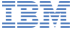

Specialty
- Java/Scala Programming
- Web App Development
- Cloud-native Applications
Skills
Java
Scala
Gradle
Node.js
Python
Angular.js
Vue.js
HTML+CSS
MongoDB
Cloudant
CouchDB
MySQL
Kubernetes
Docker
CloudFoundry
Git
Open Source Projects
Oddox Server
Website GitHub DockerBlogging server built with Java on CouchDB, ready for cloud platforms via Docker image. Currently powering RamblingWare.com, my personal blog.
View more projects and open-source contributions on my GitHub.
Experience
 Cloud Application Developer
Java
JavaEE
CloudFoundry
Kubernetes
January 2013 - August 2018 (5 years)
Intern Application Developer
PI-Tags
MSSQL
Windows Server
Summer of 2012 (3 months)
View my full work history at LinkedIn.
About Me
Code. Test. Refract. (Repeat)!
These daily activities for programmers are my favorite things about developing software. Like painting on a canvas, or writing a book, developing software is the process of careful planning, execution, and evaluation. My passion is in providing that level of detailed work to clients, and helping automate their business needs through computer software.
My name is Austin Delamar, and I'm a backend java & scala programmer, cloud-native developer, and all-around computer enthusiast.
I grew up in Zeeland, Michigan (USA). In highschool, I played a lot of calculator games on my Ti-83 and Ti-89. That's when I first realized I enjoyed tinkering with electronics and computers. I didn't know I could make a career out of tinkering. I graduated in 2009, and completed a few multiple Advanced Placement courses, that would give me a head start in college.
In Fall of 2009, I attended Grand Valley State University, and started taking courses aligned with a Bachelor's degree in Engineering. I loved taking the C programming class. After two semesters, I realized I could continue programming so I changed my major into Computer Science. I liked engineering, but I liked coding more. The courses offered for CompSci highly interested me, such as CPU Architecture, Linux Security, and UX Design. After graduating in December 2012, I entered the real world in search of my career.
Previously I worked at IBM as a Cloud Application Developer in Lansing, MI. Now I'm working at Apple as a Backend Software Engineer in Cupertino, CA. I love what I do and look forward to whatever is next!
@amdelamar
amdelamar@protonmail.com
PGP Key
Fingerprint: 0913 3bab e8fd 826c 015c 735c 9425 4427 956f 4fba
1gEfZxfcR7MHb6MsCtVD89v9JUD2t9soH
0x5ffeb02b7105be60b7cc2ee01dcea96f9877103c
Some Quotes
"Efficiency is doing things right; effectiveness is doing the right things." ~ Peter Drucker
"I reinvent the wheel, because mine is rounder." ~ Martin
"Every great developer you know got there by solving problems they were unqualified to solve until they actually did it." ~ Patrick McKenzie
"Any fool can write code that a computer can understand. Good programmers write code that humans can understand." ~ Martin Fowler
"Just because something works doesn’t mean it can’t be improved." ~ Shuri #BlackPanther